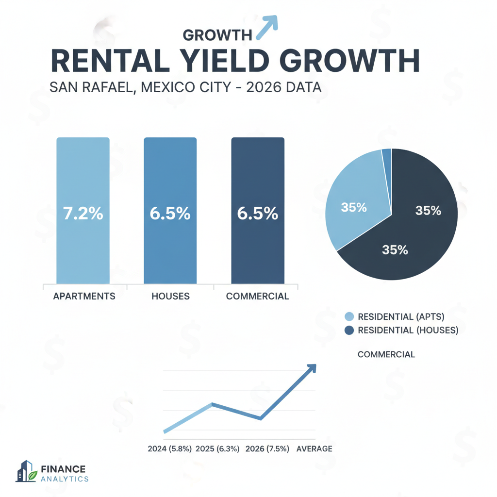

Architectural Guide 2026
San Rafael: The New Frontier of Luxury in Mexico City
From its Porfirian-era genesis on the reclaimed bed of Lake Texcoco, San Rafael has always been a neighborhood of ambition. Today, it stands as the critical nexus for elite international capital, benefiting from the 'spillover effect' of hyper-gentrified Roma-Condesa. We don't just build; we engineer resilience and extract unprecedented value, bridging US NCARB/AIA rigorous standards with localized CDMX technical realities.

The Resident Architect's View
As an architect living just across Reforma, the transition into San Rafael is immediate, a palpable shift in urban tempo. The light here, especially in the late afternoon, catches the grand facades of a different era—a richer, more ornate history than Condesa's sleek Art Deco. I admire the unapologetic layers of its past, the way a meticulously restored Art Nouveau building stands beside a mid-century rationalist block. There’s a specific, almost theatrical, density to its streets, punctuated by the rhythmic clang of the gasero or the megaphone call of the tamale vendor—sounds that, once mitigated by proper architecture, become the city’s authentic heartbeat.

Erik Martínez, AIA
Principal Architect. Former SHoP Architects NYC. Bringing international precision to CDMX's most complex heritage assets.
Iconic Landmarks
- San Cosme and Damián Church
- Calle Manuel María Contreras No. 71 (Cultural Hub)
- Paseo de la Reforma
- Monument to the Mother
- Metrobús Line 1 (Av. Insurgentes)
San Rafael: Where Porfirian Grandeur Meets 2026 Urban Dynamics
Developed during the late nineteenth-century Porfiriato, San Rafael was envisioned as a planned subdivision for Mexico City's ascending bourgeoisie, meticulously laid out on the drained, reclaimed bed of the ancient Lake Texcoco. Today, this historical foundation dictates a complex 2026 reality. Geographically bounded by Ribera San Cosme, Circuito Interior, James Sullivan Street, and the vital Avenida Insurgentes, San Rafael is experiencing a dramatic renaissance. It represents a potent convergence of architectural heritage, acute infrastructural challenges, and dynamic gentrification driven by high-net-worth nomadic expatriate capital.
Architectural Layers: From Neo-Classical to Art Deco
The neighborhood’s urban fabric is a living archive of Mexico City’s architectural evolution, presenting a dense, globally significant agglomeration of styles. You'll find opulent French Second Empire and Spanish Neo-Colonial mansions from the late 19th century, alongside majestic Art Deco structures, intricate Art Nouveau detailing, and California Colonial apartment blocks from the 1930s and 40s. Mid-20th-century Rationalist structures further enrich this tapestry. Our expertise lies in identifying functionally obsolete buildings—often older vecindades—that can be adaptively reused and repositioned as modern luxury apartments, retaining their historic charm while integrating 2026 infrastructure.
The Zone III Imperative: Engineering on Lakebed Soil
San Rafael's most formidable technical constraint is its underlying geological reality. As a neighborhood built on the ancient Lake Texcoco bed, it sits squarely within Seismic Zone III—the highest-risk classification in Mexico City. This Zone III is further mathematically subdivided into highly specific sub-zones (IIIa, IIIb, IIIc, IIId), each mapping distinct predominant site frequencies and resonant periods. The risk of catastrophic harmonic amplification, where a building's structure resonates with the underlying soil, is acute, as tragically demonstrated in the 1985 and 2017 earthquakes.
Because the Zone III clay offers virtually zero load-bearing capacity, standard shallow footings are not viable. All new construction and major structural additions necessitate the engineering and driving of deep friction piles or end-bearing piles, extending tens of meters into the earth to anchor the structure to stable subterranean strata. We bridge US NCARB/AIA rigorous geotechnical engineering standards with local construction practices, guaranteeing structural integrity against differential settlement and seismic events. This reality dictates that base construction costs in San Rafael are inherently and significantly higher than projects in Zone I (Firm Rock) areas.
Navigating the Sacred Past: INAH & INBAL Mandates
San Rafael is not just a residential zone; it is a heavily regulated museum of Mexico's architectural heritage. Properties built prior to 1900 fall under the stringent protection of INAH (Instituto Nacional de Antropología e Historia). Structures of artistic significance built post-1900, including the neighborhood’s renowned Art Deco and Art Nouveau gems, are governed by INBAL (Instituto Nacional de Bellas Artes y Literatura). High-density heritage zones are prevalent along arteries like Calle Guillermo Prieto, Calle Manuel María Contreras (especially around No. 71), and the charming historical 'Privadas'.
Renovating a catalogued property here means federal mandates supersede standard municipal regulations. Facade Preservation is absolute: geometry, scale, fenestration, and ornamentation cannot be altered. Any additions to increase density must be deeply set back to preserve historical sightlines. Material Authenticity is paramount; rotting 19th-century wooden frames must be custom-milled to exact original profiles, with modern aluminum or PVC strictly prohibited on historic facades. Exterior Color Palettes must be historically accurate, often selected from mineral-based paints (pintura a la cal). Our expertise navigates these 'Heritage Hurdles', ensuring compliance and avoiding indefinite project suspension (estado de clausura), while unlocking the immense 'Heritage Premium' for ultra-high-net-worth tenants.
Water Security: Engineering Beyond the Cutzamala Crisis
Water security in Mexico City is the most acute systemic threat, with the **Sistema Cutzamala**—our primary water source—facing historic, catastrophic lows. San Rafael is a highly 'water-stressed' neighborhood, vulnerable to significant drops in municipal pressure or complete supply shutdowns. For elite tenancy, robust, independent water solutions are non-negotiable. Standard rooftop tinacos are vastly insufficient. Our architectural infrastructure mandates the excavation and installation of subterranean **cisterns with a minimum capacity of 5,000 to 10,000 Liters** for even small multi-family units, paired with high-quality hydropneumatic pumps for hotel-level pressure. Furthermore, integrating advanced multi-stage Reverse Osmosis at point-of-use and **Rainwater Harvesting (RWH)** systems alleviates reliance on the fragile municipal grid, creating assets that command significant ESG and Autonomy Premiums—often 20% to 30% above the neighborhood mean.
Architectural Feasibility: San Rafael 2026
| Project Type | Avg. Permit Time | Seismic Risk Level | Conservation Status |
|---|---|---|---|
| Heritage Renovation (INAH/INBAL Catalogued) | 18 - 36 Months | High (Cost Overruns, Permitting Purgatory) | Strict Preservation, Un-reproducible Asset |
| Adaptive Reuse (Vecindad to Luxury Apartments) | 12 - 24 Months | Moderate-High (Structural Reinforcement, Infra Upgrades) | Value-Add, Requires H/3/20 Zoning Interpretation |
| New Build (Small Multi-Family on Vacant Lot) | 15 - 30 Months | Very High (Deep Foundation Engineering, Volumetric Caps) | Strict SEDUVI Compliance (H/3/20, 3 levels, 20% Área Libre) |
Specialized Renovations: Absolute Autonomy & Acoustic Sanctuary
Renovating in San Rafael means engineering a sanctuary within the city’s relentless energy. We achieve absolute **infrastructural autonomy** by integrating comprehensive solutions: installing **hermetically sealed PVC window frames** with **double or triple-pane acoustic laminated glass** to neutralize external acoustic friction from *gaseros* and street vendors; incorporating **uninterruptible power supply (UPS) systems** and **lithium-ion battery walls** for seamless connectivity; and installing massive **subterranean cisterns** with **hydropneumatic pumps** and **Rainwater Harvesting** for water independence. These are not luxury upgrades; they are mandatory baselines for elite asset positioning, creating a durable competitive moat.
High-Performance Interiors for the Global Nomad
Our interior philosophy for San Rafael blends Porfirian gravitas with 21st-century functionality. We preserve high ceilings, expose original brickwork, and integrate custom-milled hardwoods and luxury tiling to echo the neighborhood's heritage. Crucially, every space is engineered for the high-earning digital nomad: guaranteeing gigabit fiber optic connectivity with **power stability redundancy**, ensuring absolute **acoustic hermetic sealing**, and providing **private rooftop terraces** or lush courtyards. These turnkey apartments rent up to 30% faster and command substantial, disproportionate rent premiums, significantly accelerating cash-on-cash returns.
The San Rafael Cheat Sheet
- Best Streets James Sullivan, Av. Insurgentes, Calle Guillermo Prieto, Privadas
- Zoning Code H/3/20 (Habitacional, 3 Levels, 20% Open Space)
- Est. Cost / m² MXN 22,000 - 28,000 (Typical 2-Bed Monthly Rent)
- Best Coffee Boutique coffee shops (emerging within mixed-use corridors)
- Local Quirk The ubiquity of the franeleros, the informal parking attendants who govern every street space with an unspoken code.
The Challenge
The primary challenge in San Rafael is executing ultra-luxury renovations that honor profound architectural heritage while mitigating extreme geotechnical vulnerabilities and systemic infrastructural deficiencies. This requires a profound understanding of seismic engineering, water scarcity solutions, and urban acoustic dynamics.
In the Cuauhtémoc borough, obtaining a renovation permit is not a simple administrative task; it's the exhaustive process of securing a Manifestación de Construcción (often Tipo B or C). This entire process is contingent on a licensed DRO (Director Responsable de Obra), who assumes absolute civil and criminal liability for your building's structural integrity and code compliance, making their expertise and reputation paramount.
Our Solution
We specialize in 'Invisible Modernization,' preserving the irreplaceable aesthetic of Porfirian or Art Deco facades while embedding 2026-level resilience and performance. This includes designing foundations with **deep friction piles** to counteract Zone III's lakebed soil, integrating autonomous water and power systems, and implementing high-performance acoustic envelopes. Our structures don't just stand; they endure and transcend local challenges.
We rigorously eliminate the 'Gringo Tax' through radical transparency and an audited network of local professionals. While foreign investors are often quoted inflated rates of $1,800 to $2,500 USD per square meter, the true, fair market rate for luxury construction in CDMX ranges from $1,000 to $1,400 USD per square meter. We leverage fiduciary-bound architectural firms, top-tier DROs, and well-connected Notarios to access actual local market rates and compress bureaucratic timelines, delivering unparalleled capital efficiency.


Planning to Buy?
Don't sign a contract before a technical audit. We offer pre-purchase structural assessments in San Rafael.
2026 Cost Report
Get our detailed breakdown of current labor and material costs for luxury residential in CDMX.
Start Your San Rafael Legacy
NYC Precision. Mexican Craft. We eliminate uncertainty for international investors.